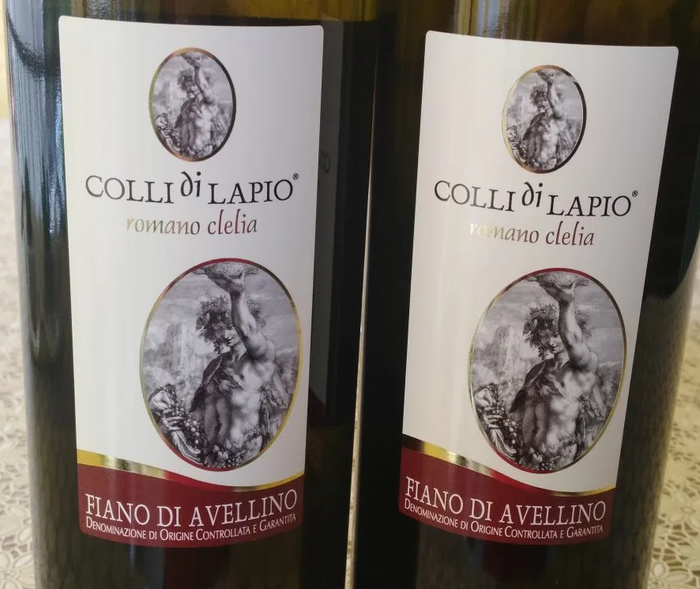
Colli di Lapio - Fianno Di Avellino
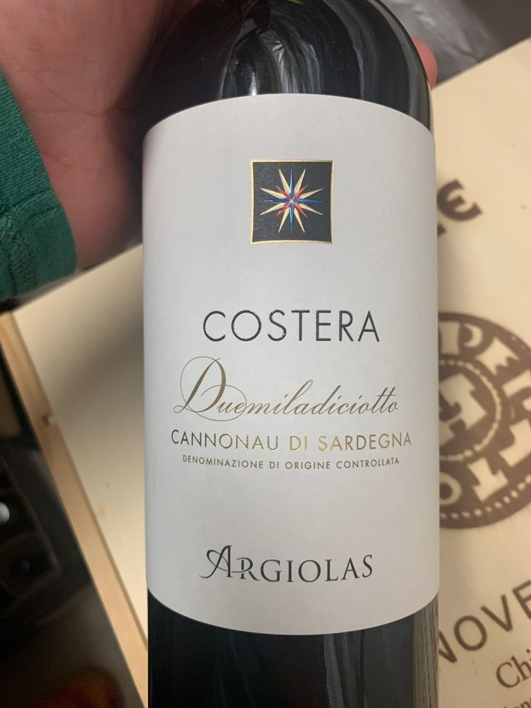
Costera - Cannonau Di Sardegna
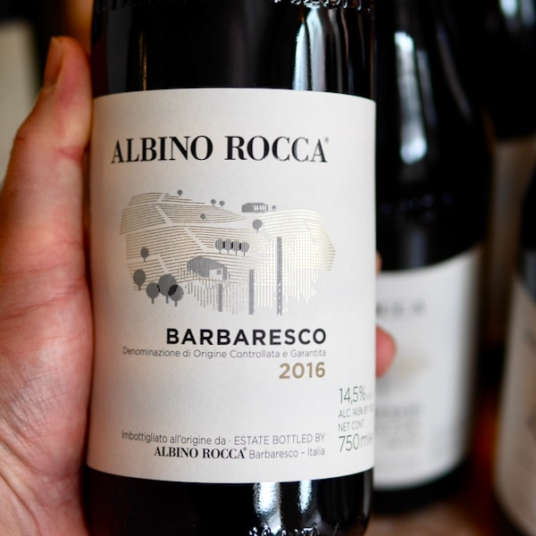
Albino Rocca - Ovello Vigna Loreto
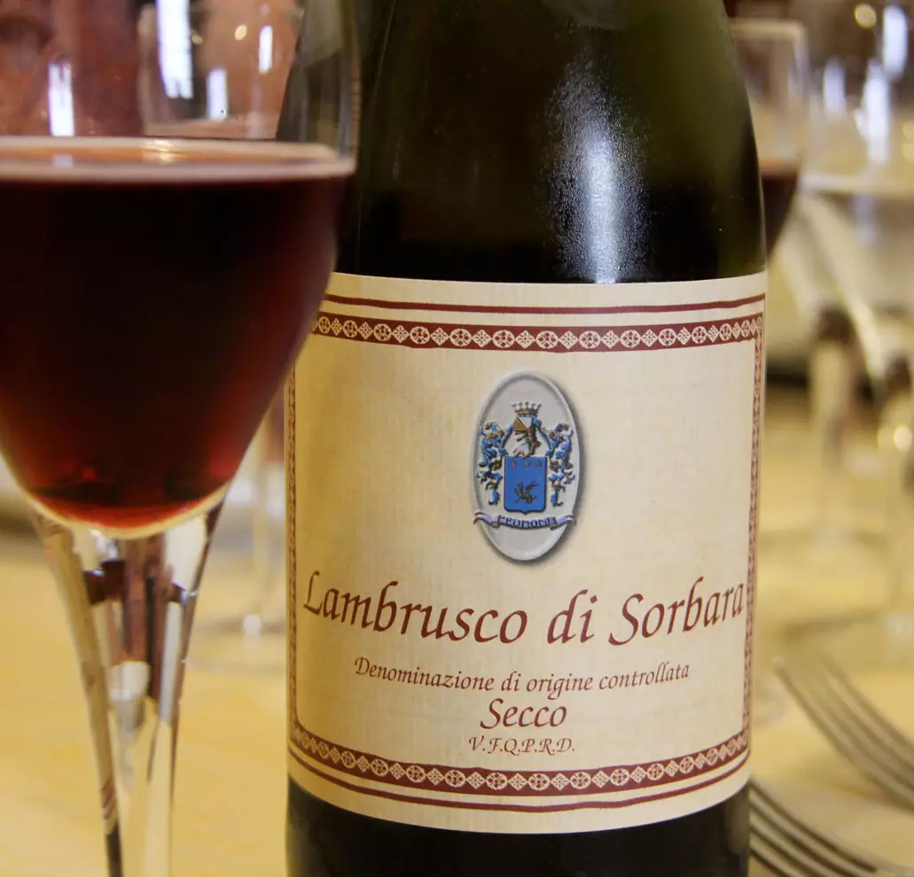
Porta Soprana - Lambrusco Di Sorbara Secco
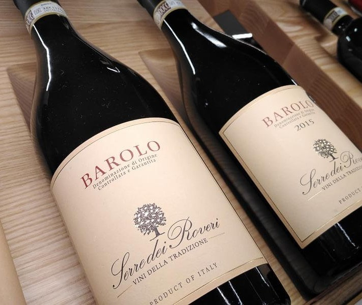
Ferredei Roveri - Barolo

Bersano - Nebbiolo d'Alba
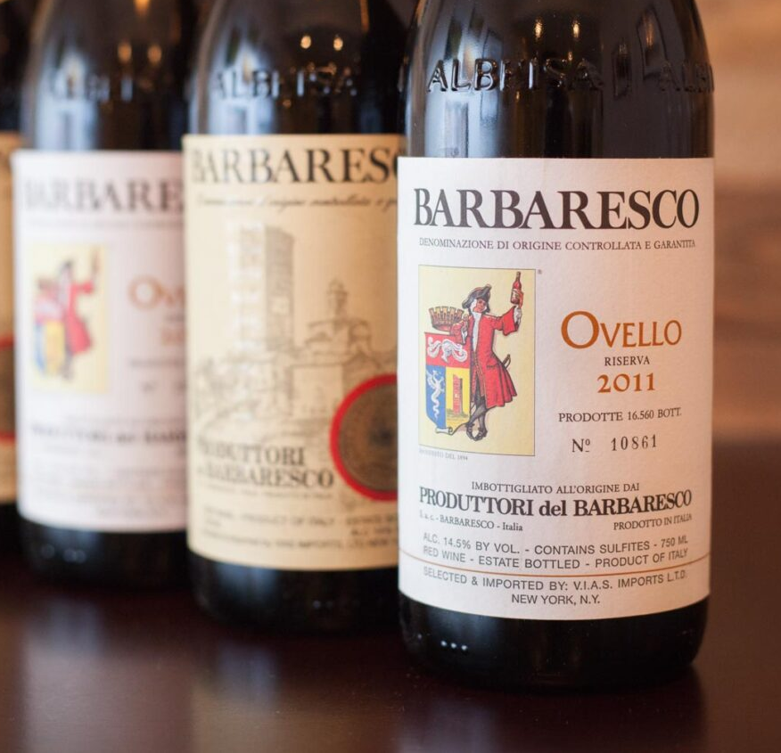
Barbaresco - Ovello
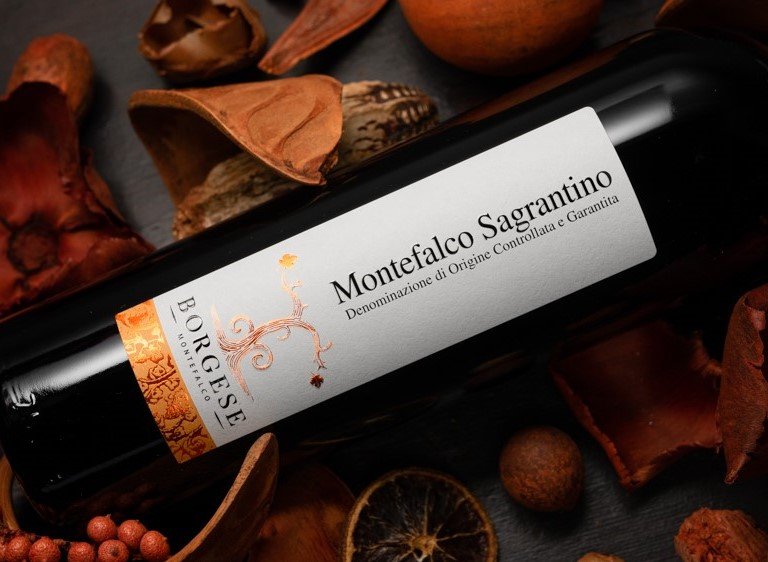
Borgese - Montefalco Sagrantino
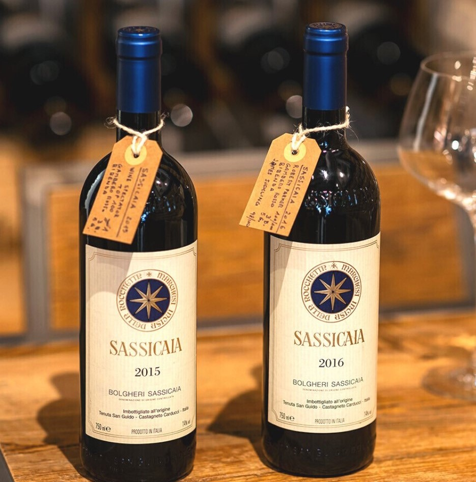
Tenuta San Guido - Sassicaia
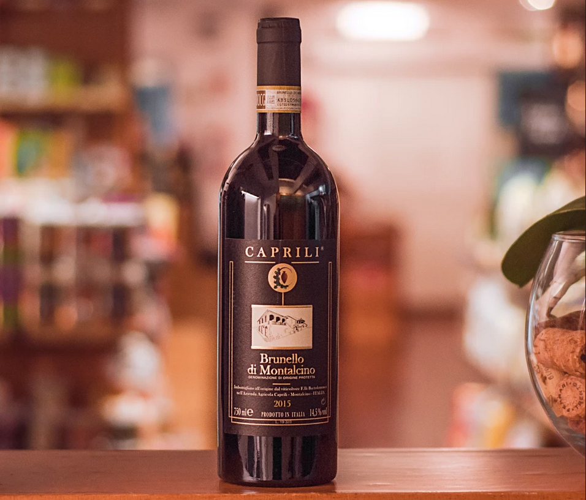
Caprili - Brunello Di Montalcino
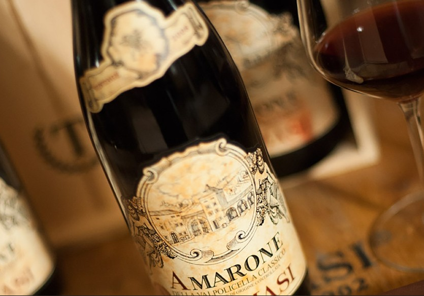
Zenato - Amarone della Volpolicella
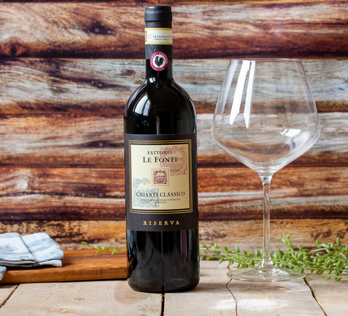
Riserva - Chianti Classico